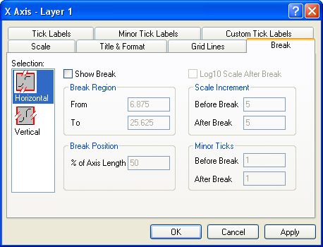

Inhalt |
| Horizontal |
Standardmäßig ist dies die untere und obere X-Achse. Wenn Sie allerdings die X- und Y-Achsen vertauscht haben (Grafik: X-Y-Achsen vertauschen) oder Sie die Achse eines Balken-, Fließendem Balken- oder Gestapeltem Balkendiagramm bearbeiten, ist das horizontale Symbol mit der linken und rechten Y-Achse verbunden. |
|---|---|
| Vertikal |
Dies ist standardmäßig die linke und rechte Y-Achse. Wenn Sie allerdings die X- und Y-Achsen vertauscht haben (Grafik: X-Y-Achsen vertauschen) oder Sie die Achse eines Balken-, Fließendem Balken- oder Gestapeltem Balkendiagramm bearbeiten, ist das vertikale Symbol mit der linken und rechten X-Achse verbunden. |
Nachdem Sie die Bearbeitung der Achseneigenschaften abgeschlossen haben, können Sie jede beliebige andere Achse in Ihrem Diagramm bearbeiten, indem Sie das entsprechende Symbol im Listenfeld Auswahl auswählen. Um zu verhindern, dass Ihre Auswahl auf das Diagramm angewendet wird, klicken Sie auf die Schaltfläche Abbrechen zu jeder beliebigen Zeit während des Bearbeitungsprozesses (aber vor dem Klicken auf Anwenden).
|
Hinweis: Sie können keine Achsenunterbrechung in einem 3D-Diagrammlayer einfügen. |
Aktivieren Sie dieses Kontrollkästchen, um eine Achsenunterbrechung zu erzeugen.
Der Wert im Textfeld Von bestimmt den letzten Wert, der vor der Unterbrechung angezeigt wird. Der Wert im Textfeld Bis bestimmt den ersten Wert, der hinter der Unterbrechung angezeigt wird.
Der Wert im Textfeld bei % der Achse bestimmt die Position der Unterbrechung auf der Achse. Dieser Wert wird in % der Achsenlänge angegeben. Geben Sie zum Beispiel 50 in dieses Textfeld ein, um die Achsenunterbrechung in der Mitte der Achse zu positionieren. Falls nötig, ändert Origin die Skalierung auf beiden Seiten der Unterbrechung, um die angegebene Position zu übernehmen.
Aktivieren Sie dieses Kontrollkästchen, um die Skalierung hinter der Unterbrechung als Log10 festzulegen.
Die Werte in den Textfeldern Vor Bruch und Nach Bruch bestimmen das Inkrement vor und nach der Unterbrechung. Origin zeichnet einen großen Hilfsstrich und eine Hilfsstrichbeschriftung an jedem Inkrementintervall.
Die Werte in den Textfeldern Vor Bruch und Nach Bruch bestimmen die Anzahl der kleinen Hilfsstriche (zwischen großen Hilfsstrichen) vor und nach der Unterbrechung. Diese Einstellungen überschreiben den Wert im Textfeld # Kleine Hilfsstriche auf der Registerkarte Skalierung.